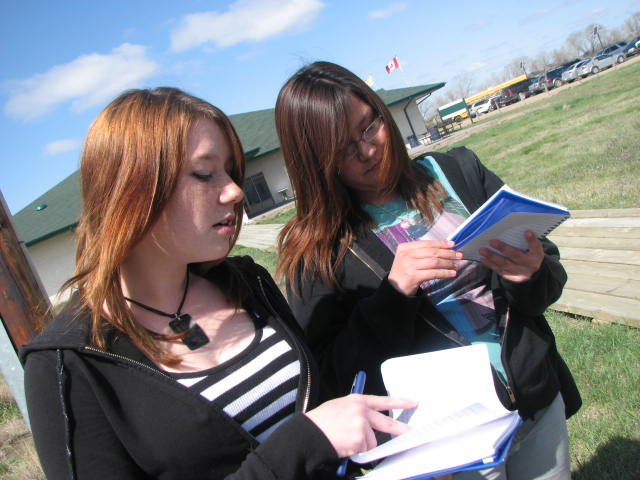
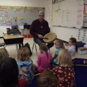
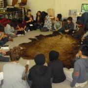
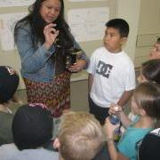

Units & Lessons


Treaty Education Learning Resource:
Curriculum Support Documents K - 9
(click the links below for the PDF of each document)
| Kindergarten | Grade 1 |
| Grade 2 | Grade 3 |
| Grade 4 | Grade 5 |
| Grade 6 | Grade 7 |
| Grade 8 | Grade 9 |
Outcomes:
Treaty Relationships (TR)
Goal: By the end of Grade 12, students will understand that Treaty relationships are based on a deep understanding of peoples’ identity which encompasses: languages, ceremonies, worldviews, and relationship to place and the land.
Spirit and Intent of Treaties (SI)
Goal: By the end of Grade 12, students will recognize that there is interconnectedness between thoughts and actions which is based on the implied and explicit intention of those actions. The spirit and intent of Treaties serve as guiding principles for all that we do, say, think, and feel.
Historical Context (HC)
Goal: By the end of Grade 12, students will acknowledge that the social, cultural, economic, and political conditions of the past played and continue to play a significant role in both the Treaty reality of the present and the reality they have yet to shape.
Treaty Promises and Provisions (TPP)
Goal: By the end of Grade 12, students will appreciate that Treaties are sacred covenants between sovereign nations and are the foundational basis for meaningful relationships that perpetually foster the well-being of all people.
Unit Plans & Lessons
 CLICK HERE for Grade Specific Cross-Curricular Treaty Ed Resources!
CLICK HERE for Grade Specific Cross-Curricular Treaty Ed Resources!
Living Sky School Division teachers and consultants share their units and lessons that highlight Treaty Essential learnings. The resource list will continue to grow over time. We welcome your feedback and contributions to this collection of units.
- Grade 1 - 7 Plains Cree Hand Drumming Overview
- Grade 3 - Lifestyle changes after signing treaty unit
- Grade 4 - Residential Schools unit
- Grade 4 - Whose Voice? The Conquerors unit
- Understanding worldview when learning about the treaties. Use drama and role play to create scenarios with the real characters from history. (Arts Ed/ELA/Treaty Ed)
- Grade 5 - 12 - Response to Art viewing sheet with discussion, background and activity
- Video with artist talking about her art work about residential schools
- Video with artist talking about her art work about residential schools
- Grade 5 – Social Studies - Canada and Aboriginal Heritage unit
- Review: Jeopardy Game
- Grade 6 – ELA – Heroes/Models/Peacemakers unit
- Grade 6 – Arts Education – Métis Identity & Jigging unit
- Grade 7 – Ecosystems & Indigenous Knowledge: “Healing Garden”unit
- Sacred Plants (3 min. audio file: Oral Storytelling, from CBC Re/Vision Quest podcast "Elders")
- Grade 8 – Social Studies - We Are All Treaty People unit

Treaty Six Education Council (TSEC) shares their unit plans with teachers. Please look at their Google Drive site to browse these excellent lessons and units. TSEC is located in North Battleford, SK.
The Gathering is a website created by local educators to highlight resources created by teachers in our area.
Resources for Integrating Aboriginal Ways of Knowling and Learning, this is a website from British Columbia.
The Office of the Treaty Commissioner has excellent resources for teachers of all grades.
The Blanket Exercise (KAIROS), is an interactive learning program that helps students see the scope of our shared treaty history, from the time of first contact with Europeans right up to our contemporary context. This is an excellent resource for teachers from grade 4 - 12. There are different scripts to download (youth and adult) editions. Living Sky School Division is able to lend you the other resource materials needed.
|
This extensive resource, called, Walking Together, comes from Alberta Education and also represents teachings through related Big Ideas. |
|
|

6 Treaty Essential Learnings
TEL1 Treaties – introduces the who, what, where, when, and why of treaties.
TEL2 Treaty Relationship – reviews responsibilities and partners involved in the treaty relationship.
TEL3 History – consists of the historical events in the making of the treaty making process.
TEL4 Worldviews – provides an understanding of the differing worldviews of the treaty partners.
TEL5 Symbolism – focuses on meaning behind the symbols and actions used in the treaty making process.
TEL6 Contemporary Issues – deals with new and current issues related to the treaties.
Living Histories - Authentic Experiential Learning
Living Histories is a Living Sky School Division program designed to encourage schools with access to guest artists and cultural leaders. Possible projects might involve science experiments with traditional plants, stories with elders, learning to dance, "cultural perspectives" interviews, role plays, puppet theatre, storytelling, painting and play building. Living Sky may be able to share costs with schools for these projects. Use the Living Histories Request Form to indicate your needs.
|  |
 |
 |
| Joseph Naytowhow, storyteller | Allen Sapp, Talking circle | Science, Healing Garden project |